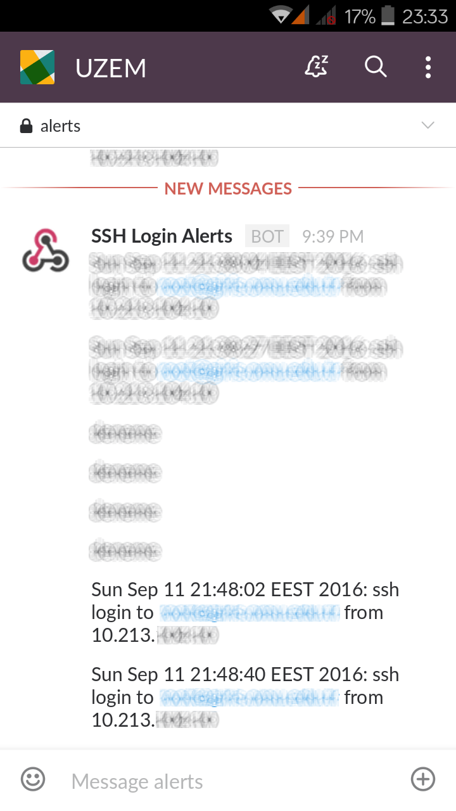

Merhabalar. Bu yazımızda daha çok geliştirici ekiplerinin kullandığı ekip içi yazışma ortamı sağlayan Slack ile ilgili çalışma gerçekleştireceğiz. Artık ekip içi yazışmalarınızı, iş atamalarınızı (busybot) Slack üzerinden yaptığınıza göre fazlalıklardan kurtulmak isteyebilirsiniz. Şahsen ben çok fazla ortam kullanmayı tercih etmek yerine, tek yerden bir dashboard mantığında herşeyi görebilmek isterim. Kısa bir girizgahından ardından giriş yapalım.
Slack'de çoğu uygulama gibi webhook yapısına uygun tasarlanmıştır. Webhook farklı uygulamaların birbirleri ile entegrasyon sağlayabilmeleri için Uygulama içerisinde oluşan event'leri HTTP üzerinden JSON Payload'ları ile kendilerine subscribe olan diğer uygulamaları tetiklemesidir. Tabii bu işlemi yapabilmeniz için webhook izinlerini sağlamanız gerekmektedir.
Slack için token oluşturalım.
Buraya tıklayarak Integration Settings alanından yapılandırma ayarlarına ulaşabilirsiniz.
Post to Channel: Gönderim yapacağınız kanal
Webhook URL : Kanalı seçmeniz ardından bu URL dinamik olarak oluşacaktır. Bu URL'yi sonra ki aşamalarda kullanacağımızdan dolayı saklamanız gerekmektedir.
Descriptive Label: Dilerseniz opsiyonel olarak açıklama etiketi girebilirsiniz.
Customize Name: Gelen bildirimlerde yer alan kullanıcı adını seçebilirsiniz.
Customize Icon: Gelen bildirimlerde yer alan iconu değiştirebilirsiniz.
Preview Message: Bu alandan da gelecek bildirimi önizleme olarak görebilirsiniz.
Ayarları "Save Settings" butonu ile birlikte kaydediyoruz.
SSH ile yapılan girişlerde bildirim gelmesini sağlayalım.
/etc/profile dosyasını editör ile açtıktan sonra en alt kısmına aşağıdaki kod blogunu ekleyebilirsiniz. "WEBHOOK_URL" alanını yukarıda saklamanızı istediğim alanla değiştirmeyi unutmayınız.
if [ -n "$SSH_CLIENT" ]; then
TEXT="$(date): ssh login to ${USER}@$(hostname -f)"
TEXT="$TEXT from $(echo $SSH_CLIENT|awk '{print $1}')"
curl -X POST \
--data-urlencode "payload={\"username\": \"SSH Login Alerts\", \"text\": \"${TEXT}\"}" \
WEBHOOK_URL &>/dev/null &
fi
Yukarıdaki kod blogunu açıklamak gerekirse, sadece SSH işlemlerinde çalışacak şekilde ayarlanmıştır. date parametresinde zaman damgası, $USER bağlantıyı gerçekleştiren kullanıcı, $hostname ise bağlantı yapılan makina adını içerir. $SSH_CLIENT ise bağlantıyı gerçekleştiren kullanıcının IP adresini içerir ve bu AWK ile sadeleştirilmiştir. Akabinde curl ile birlikte POST isteği gerçekleştiriyoruz. Curl istekleri sonrasında response değerlerinin ekrana yazdırılmaması için /dev/null değeri kullandım. Böylece ssh yapan kullanıcı hiçbir şekilde çıktı göremeyecektir.
Kendim Slack uygulamasını mobilde de kullandığımdan dolayı bildirimler cep telefonuma da direkt ulaşmaktadır.

Hepsi bu kadar.